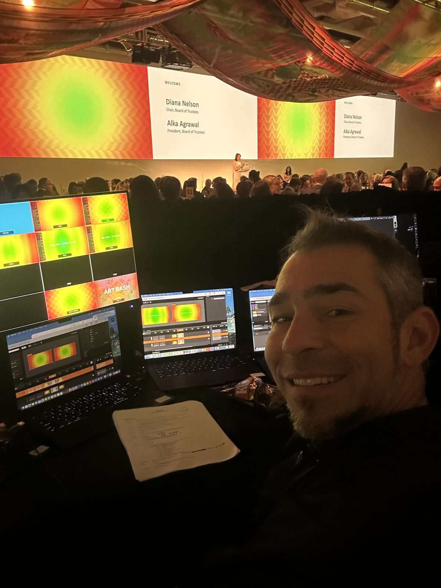

01
Castellanos Coaching
People
Executive-function coaching since 2020 for Autistic and ADHD clients, including Regional Center and Self-Determination Program participants.
Visit siteI help multidisciplinary work become easier to understand, organize, and bring into the world. My work moves across coaching, learning design, AI, creative strategy, events, and place.
Venture Pathways
Each area has its own doorway, but the work is strongest when the parts inform each other.
Castellanos Coaching
Executive-function coaching since 2020 for Autistic and ADHD clients, including Regional Center and Self-Determination Program participants.
Visit siteCastellanos Consulting
Strategy and project development for ambitious ideas, unusual opportunities, and complicated plans.
Start with IdeasCastellanos Creative
Brand strategy, messaging, websites, presentations, identity direction, and creative support.
Start with BrandsAI You Trust
AI literacy, rubric-based evaluation, creative technology, and responsible adoption.
Start with TechnologyRecreation Experiences
Events, retreats, sound, production, and community gatherings shaped with intention.
Start with ExperiencesMake Places Better
Creative property stewardship, beautification, hospitality, guest readiness, and thoughtful activation.
Visit siteSelected Evidence
A concise set of projects that reflects invention, education, production, and community building.
An original sound, product-invention, and event-production venture connecting audio design, product development, entrepreneurship, branding, technical production, and gatherings.
Greg's role: Founder, inventor, producer, and technical director, 2013-2020
The work produced two U.S. design patents: a portable sound system and a portable yoga block speaker.
Patents: D739,846 Portable sound system · D815,617 Portable yoga block speaker
A nonprofit arts and maker hub in North Beach, San Francisco, built to connect participation, commerce, learning, and community in one physical place.
Greg's role: Founder, CEO, and program director, 2019-2022
Owned facility acquisition, nonprofit governance, grant writing, partnerships, youth STEAM programming, and community-facing events that engaged hundreds of artists and makers.
Coverage: Historical Local Maker Mart article
Hands-on STEAM curriculum and project-based learning built around fabrication, technology, design, creativity, and practical problem solving.
Greg's role: Curriculum designer, educator, and program developer, 2014-2019
Taught hundreds of learners, designed project-based sequences across 2D/3D design, laser cutting, CNC, 3D printing, and electronics, and co-designed TechShop Inside, a mobile makerspace for underserved communities.
More than fifteen years of work across live sound, video, playback, show calling, technical direction, and complex event operations.
Greg's role: Technical director, audio and video professional, show caller, producer, and production partner
Supported productions for Google, Stripe, Atlassian, GitHub, Nasdaq, SF MoMA, and the World Economic Forum through these production companies; manages 200+ slide decks per show and live cue-to-cue workflows.

About Greg
Education, coaching, AI, invention, events, community programs, sound, and place all point toward the same pattern: understand the system, care about the people, and make the next step practical.
Read the narrativeGreg's work is strongest when a project has people, moving parts, and a need for good judgment.
Contact